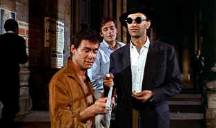

| Purple Noon/ B+,C+ |
| Miramax/1960/118/WS 1.66 |
Rife with jealousy and class consciousness,
duplicity unfolds in festive 1950s Italy, rolling with the grace of the Mediterranean
and pulsing with the beat of Rome. Lush settings play against the grain in
Purple Noon, adding an unsavory tint to the rose-colored
world.
Tom Ripley is tagging along with playboy
Phillippe Greenleaf to collect a five thousand dollar bounty from
Philippe's wealthy San Francisco father for convincing the reprobate
expatriate son to return home to American soil. While Philippe enjoys
Tom's company, all is well. But Marge, his live-in, isn't exactly thrilled
by the relationship. Tom's time is running out.
 |
|
Life's a lark. ©Miramax
|
Adapted from the Patricia Highsmith novel The Talented Mr.
Ripley, director Rene Clement cuts away a lot of the fat of the recent
big, lush production remake by director Anthony Minghella. Relationships
are revealed with quick efficient strokes and it is
less convoluted and more claustrophobic. Still, important bit of
information are held back and revealed at essential moments.
Clement makes Purple Noon a sensuous and sinewy film. Tom Ripley
is one of those truly beautiful people. Alain Delon is a
perfect choice as Tom. His charm is undeniable, he's got matinee idol
looks, yet there is something
disreputable about him. You can believe Delon's Tom capable of almost anything.
He's an amoral animal and that is what keeps the films from floundering in
rough waters. Alongside Delon, Maurice Ronet is excellent as Philippe Greenleaf.
There's just enough resemblance between Delon and Ronet to make the plot
even more effective.
Purple Noon captures place with great
authenticity without resorting to travelogue shots. The film has a
powerful physicality. Things unfold with like a flash of lightening in a
dark sky. Nino Rota's score captures the various mood shifts and the
flavor of the
locales.
This may not be the most attractively transferred
DVD, but Purple Noon retains it visual power in service of the very
tight script. The credit sequence is very grainy, but overall grain is
tighter, consistent and mostly stable.
Color saturation is fine. Some minor color instability is evident in
the source material. This is mostly a sharp transfer that's easy to
watch. It's a very fair representation of the filmmaker's intent and the
original source material. Some street scenes are a little soft but I think
it is the way it was shot rather than owing to deficiencies int he
transfer. Good black level in the night sequences. The Cardinal red robes
at Freddy's car are like a patch of bright blood in the black night. The
red striped shirts are quite a jittery mesh and other straight edges don't
fair much better. Removable yellow English subtitles are easy to
read. The pans on a DLP are a bit extra noisy, especially in a grainy
transfer.
|
|
|
|


Mystery writer Fred Hunter digs into classic films on DVD. Check out his
insightful reviews at The Classics on DVD.

Excellent resource with DVD reviews, forum and more. Home of
the DVD Savant.
 Jim Doolittle Jim Doolittle
ISF Instructor. Premier calibrator and expert front projection system
setup technician in the Boston area.
 A huge selection of French movie
posters with images galore. Don't miss this site if you ate interested in
lovely French posters. A huge selection of French movie
posters with images galore. Don't miss this site if you ate interested in
lovely French posters.

Selections from the Feature
Archive include articles on Akira Kurosawa, Blonde Bimbos, Frank Darabont, Steven Culp, John Herzfeld or Vietnam: The Hollywood Pariah, and many
more....
Thorough a Lens, Obliquely

Flicks about Hollywood make fascinating material, but the establishment
isn't always totally forthcoming. Click on the Hollywood montage for a
look at some of the best Hollywood films about the movie-making business.

The Movie Poster
Archive include extensive poster images from the films of stars like Susan
Hayward, Kirk Douglas, Katharine Hepburn and many more. Our featured
star is Robert Mitchum
|